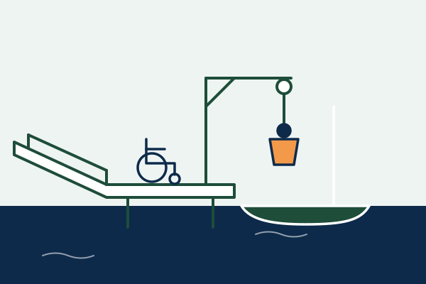

Infos pratiques
Tout ce qu’il faut savoir pour venir naviguer : lieu, accès, matériel, accessibilité et tarifs.
Lieu
Club nautique Voiles de Seine
Face au 39, quai Alphonse Le Gallo
92100 Boulogne-Billancourt
Accès
- Métro : lignes 9 et 10
- Tramway : ligne T2
- Garage à vélos sur place
- Pas de parking voiture : privilégiez les transports en commun
Matériel
Fourni sur place
- Le bateau
- Une veste de navigation
- Un gilet de sauvetage
Recommandé
- Un t-shirt à manches longues, idéalement anti-UV
- Un pantalon léger
- Crème solaire, casquette et bouteille d’eau
Accessibilité
Le site est accessible aux personnes à mobilité réduite grâce à une rampe d’accès au ponton. Un système de poulies permet d’installer en toute sécurité les personnes en fauteuil dans les bateaux.

Tarifs
| Public | Prix |
|---|---|
| Moins de 12 ans | Gratuit |
| Titulaires d’une carte mobilité inclusion ou d’une carte d’invalidité | Gratuit |
| Étudiants et personnels de l’Université Paris Nanterre, membres de Novosport, licenciés FFVoile | 5 € |
| Autres visiteurs | 8 € |
| T-shirt officiel de l’événement | 10 € |
Sécurité
Un zodiac de sécurité surveille en permanence la zone de navigation. L’encadrement nautique est assuré par le club Voiles de Seine.
Tous les participants portent un gilet de sauvetage sur l’eau. Les mineurs doivent disposer d’une autorisation parentale.
S’inscrire